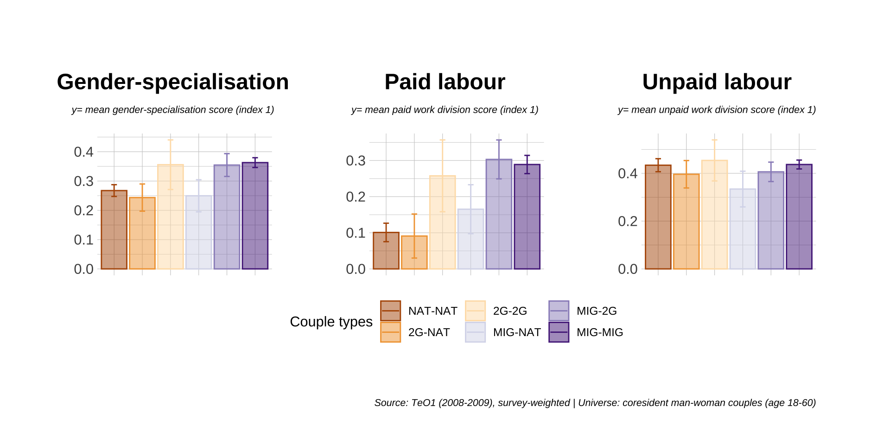

Gendered Journeys to Mixed Unions
BSPS 2022 - Migration Strand
Dr. Marion Lieutaud
London School of Economics, Department of Methodology, Understanding Society research fellow
Literature review
Intermarriage: classic indicator of assimilation. High intermarriage rates = high assimilation and low distance between groups.
Interested in Why is it that some migrant groups intermarry more than others? Group-level differences and segmented assimilation. Opportunity structures at group level (e.g. group size and marriage market constraints) and at micro-sociological level: timing of couple formation is also connected to partner choice (Soehl & Yahirunn, 2011). These processes and constraints are gendered (Gonzales-Ferrer 2018).
The consequences of intermarriage: (1) labour market performance (Meng & Gregory 2005, Furtado & Theadoropoulos 2010). (2) the intermarriage ‘premium’.
Gendered processes and gendered consequences is the intermarriage premium only for migrant men? (Nystedt & Dribe 2015; Basu 2015; Nottmeyer 2014 on paid and unpaid labour).
Research questions
Does the intermarriage premium apply to the gender-division of labour, and if yes, does it apply equally to migrant men and migrant women?
Could this be linked to different circumstances of migration and mixed couple formation?
theoretically: could it be that (1) intermarriage does not necessarily reward assimilation for women especially; (2) conjugal mixedness (Collet 2015) does not simply produce adaptation, but depends on power balance in couple.
Data and methods
Data
MIG-NAT couples: one partner was born abroad* (MIG), their partner was born in the country of immigration to parents also born there (NAT).
| Sub-samples (cumulative criteria) | n |
|---|---|
| FR: Trajectoires et Origines (2008-2009) - INED-INSEE | |
| Individual survey respondents (Te0 1) | 21761 |
| - in cohabiting relationships | 13242 |
| - man-woman relationships | 13155 |
| - both partners of working age (18-60) | 12612 |
| - migrant respondents only | 6266 |
| - excl. natives from overseas territories | 5871 |
| - excl. obvs with key missing values | 5828 |
| - in mixed couples (MIG-NAT) | 1863 |
| Sub-samples (cumulative criteria) | n |
|---|---|
| UK: Understanding Society (2009-) - ISER | |
| UKLHS individual survey respondents (wave 2) | 54565 |
| - in cohabiting relationships | 34281 |
| - both partners were full survey respondents | 27058 |
| - man-woman relationships | 26826 |
| - both partners of working age (18-60) | 18200 |
| - exc. obvs with key missing values* | 17286 |
| - with individual partnership history data | 15678 |
| - migrant respondents only | 2623 |
| - in mixed couples (MIG-NAT) | 947 |
Method
Sequence analysis: building life-course-migration sequences to understand the timing and context of both migration and couple formation. Focus on 10-year window around the moment of first migration to the UK.
Descriptive statistics on migrants and mixed couples sequences and linear regression models with gender division of labour as outcome variable.
survey-weighting
Results
Migrants’ gender division of labour: the mixed couple effect
Sequences
Sequence classification
- Sequence analysis with optimal matching (transition costs based on frequency of transition)
- Clustering (partitioning around medoids) into 6 clusters
- Sequence analysis with optimal matching (transition costs based on frequency of transition)
- Clustering (partitioning around medoids) into 5 clusters
Sequence typology
Migration sequences and life-course trajectories
Migrant women
to do - include UKLHS data (dataprep) - include necessary wrangling - include sequence partition plots for UKLHS - include gender-specialisation barplots for UKLHS - include sequence distribution barplots for MIG-NAT couples for UKLHS - include vertical plots for sequence distribution: (1) for France and (2) the UK - include final model table: to show that mixing matters a lot for men but not so much for women, once accounting for migration timing and trajectories.
Do the circumstances of migration matter for the gender-division of labour?
Conclusion
Gendered paths to mixing
- Migrant men in mixed couples = mainly child migration.
- Migrant women in mixed couples = large proportion of couple-forming migration (involving majority native British and French men).
Contrasted stories of conjugal mixedness
- for migrant men, intermarriage with majority group is associated with (much) more egalitarian relationships.
- No such effect for women and no sign of compromise or adaptation in mixed couples.
Key points and open trails
- Assimilation theory: much better fit for migrant men’s intermarriage (not perfect fit)
- Disempowering paths of migration for women (negative effect of couple-forming migration overall)
- There may be a durable power imbalance between native and migrant partner even when the migrant partner has long been in the country.
- There may also be (reverse and gendered) self-selection and recruitment effects around gender attitudes
Thank you
Appendix
Abstract
Migrant-native intermarriage is a well-researched topic (Kulu and Hannemann 2016; Safi 2010) and a cornerstone of theories of assimilation. However, the gendered dynamics connecting migration and mixing are at best peripherally mentioned in most quantitative enquiries. Yet analyses of gendered outcomes of migration have noted the contrast between the economic and work benefits of intermarriage for migrant men (very beneficial) and for migrant women (not beneficial) (Basu 2015; Lieutaud 2021). This could well be explained by more or less disempowering ‘journeys’ to mixing (e.g. marriage migrants or ‘trailing spouses’ vs. independent ‘pioneer’ migrant ( González-Ferrer et al. 2018)). This paper investigates the life-course and legal circumstances of migration which form the backdrop to the formation of a mixed union, and whether they differ between migrant women and migrant men. Drawing on survey data from Understanding Society (UK, 2009-) and Trajectoires et Origines (France, 2008-2009, 2019-2020), I employ sequence analysis to build a typology of migration journeys (see Castro Torres 2020; Kulu and Mikolai 2021). I find that couple-forming migration is a frequent feature of mixed unions involving migrant women, indicating scenarios where they either followed their partner immediately after starting the relationship, or were only just arrived. Migrant men in mixed unions, in contrast, were long there by the time when they formed a mixed union. Mixed unions in France are also overall more likely to involve child migrants, which could be connected to slightly different policies around bringing dependents, and the importance of school socialization in the French context.
Stepwise model
by cpl_sex
by regi3
pam6nat women
Pam6Nat Men
Pam6Nat2 women
Pam6Nat2 Men

m.lieutaud@lse.ac.uk